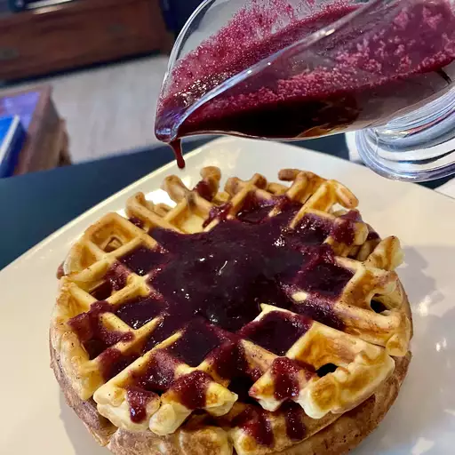

Waffles Recipe

Make some delicious waffles with this simple recipe! Original source of the recipe can be found here.
Ingredients
- 2 large eggs
- 2 cups of all purpose flour
- 1¾ cups of milk
- ½ cups of vegetable oil
- 1 tablespoon of white sugar
- 4 teaspoons of baking powder
- ¼ teaspoons of salt
- ½ teaspoons of vanilla extract
- Nonstick cooking spray
- Optional: Toppings like syrup, butter, and fruits
Directions
- Preheat a waffle iron according to manufacturer's instructions.
- Whisk eggs in a large bowl until light and fluffy. Add flour, milk, and vegetable oil and mix to combine. Whisk in sugar, then mix in baking powder, salt, and vanilla just until smooth, being careful not to overmix.
- Spray the preheated waffle iron with nonstick spray. Pour batter onto the hot waffle iron and cook until golden brown and the iron stops steaming, 3 to 5 minutes.
- Serve hot with desired toppings.
Navigation